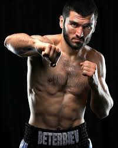

Artur Beterbiev
In this name that follows Eastern Slavic naming customs, the patronymic is Asilbekovich and the family name is Beterbiev.
Artur Asilbekovich Beterbiev (born 21 January 1985) is a Russian and Canadian professional boxer, currently holding the undisputed championship in the light-heavyweight division since October 2024.
He is known for his punching power, winning the first 20 of his 21 professional fights by knockout or stoppage.
Amateur Career
Beterbiev had an impressive amateur career with over 300 fights, securing several championships including the 2006 European Amateur Boxing Championships and the 2009 World Championships.

Artur Beterbiev - Light-heavyweight Champion